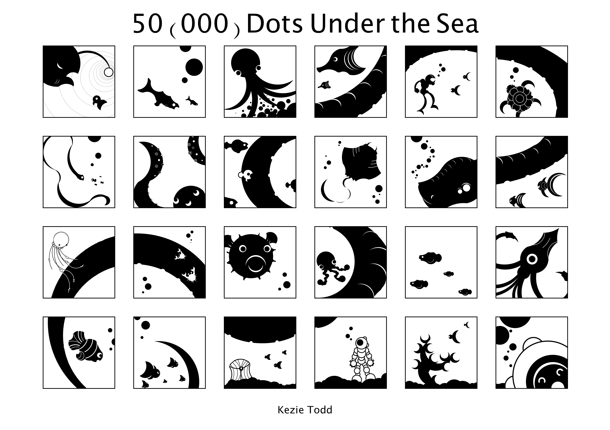
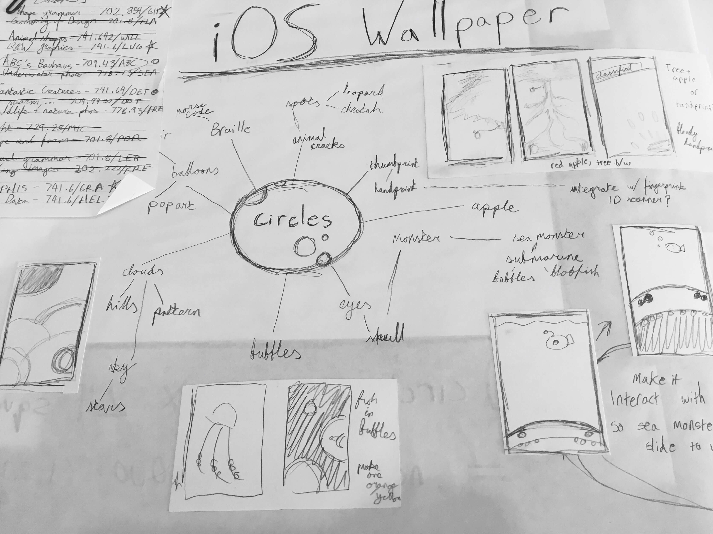
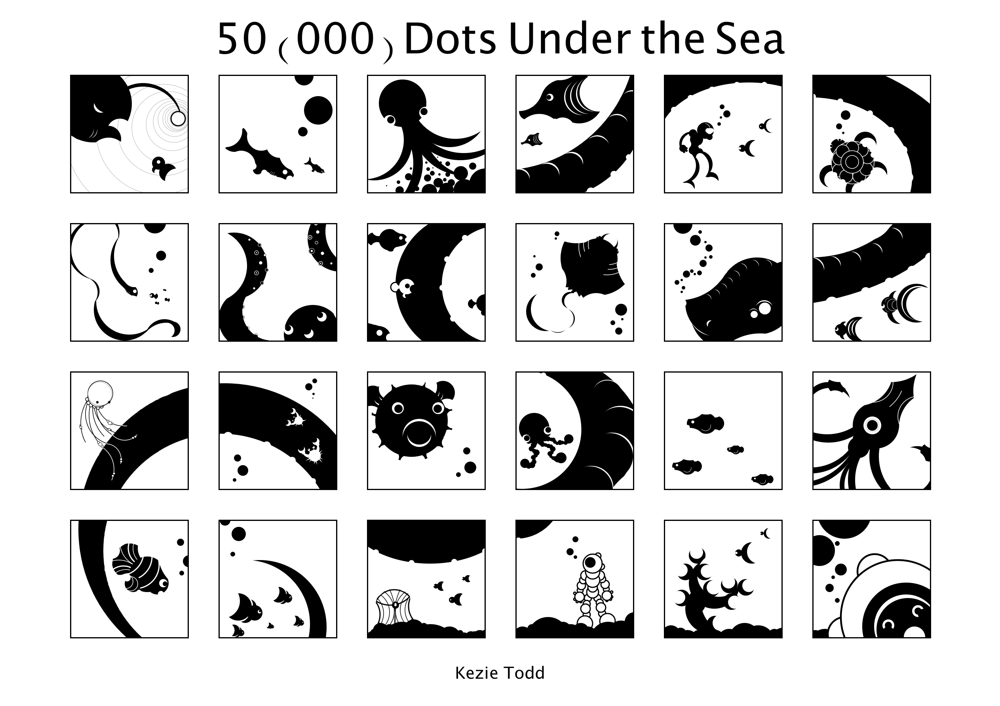
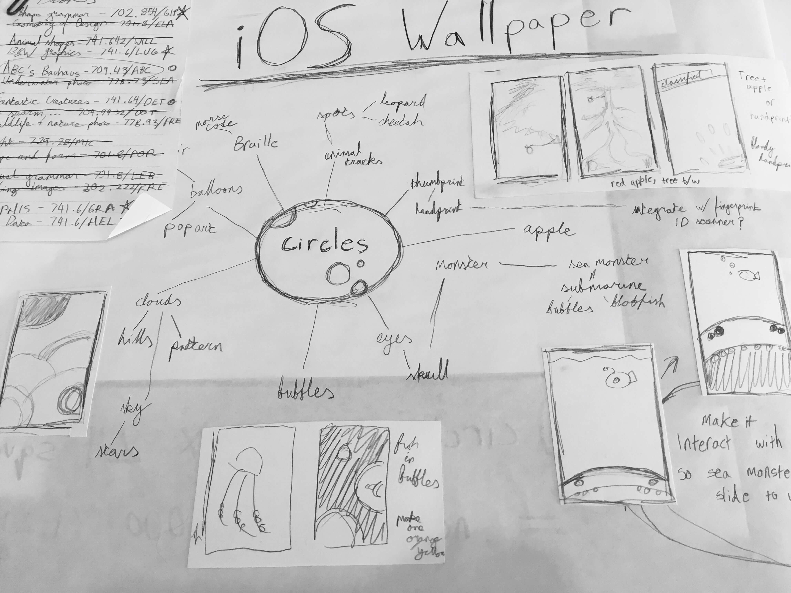
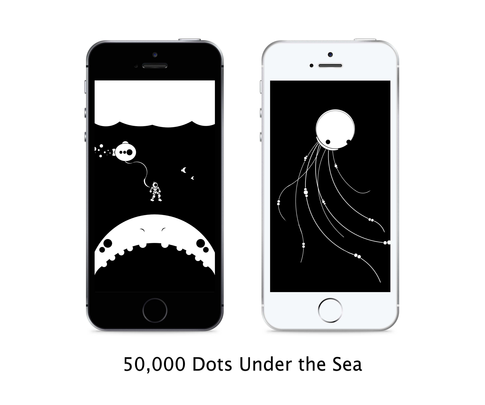

50,000 Dots Under the Sea
Circles come to life as design fundamentals meet deep sea diving.
Brief:
Create an A3 type specimen poster based on one of seven typefaces, reflecting the type’s style and including background information on the font and/or its designer.
Goals:
- Root the core concept of the design in the history of the typeface
- Bring a ‘simple’ typeface to life
- Make the viewer reconsider how they see the typeface
- Like any good type specimen poster, it should both enlighten and entice
Approach:
Type specimen posters were analysed, far too many Josef Muller Brockmann books were read, and a love-hate relationship with Swiss design was developed. Researching the history of Akzidenz Grotesk revealed that its true personality is hidden in its origins. No designers name was attached, it was all about the characters. It was the type of tradesmen and designers. The conveyor of content over style. The toppler of overly ornamental giants. The serif killer.
And thus Akzidenz Grotesk was cast as the star of its own horror film, with a design that combined the essence of its history as the original sans-serif and its classic use in Swiss design. After all, a type specimen poster is truly an advertisement and nothing excites one for a product more than a film poster.
 



Execution:
Two different approaches to the brief were undertaken, resulting in two final posters (and many more sketches). The first evolved from a movie poster into a visual timeline that put as much emphasis on the history of the typeface as the killer concept.
The second put the typeface and theme front and centre. For this type of story, it was essential that the design and not the text did the majority of the telling. Azidenz Grotesk is not a flowery font and the copywriting should be no different. Thus the movie poster version was created to distill hours worth of research into a few lines. A credit block can convey the facts in seconds all while reinforcing the theme, like the accolades and quotes that all good films (or typefaces) deserve.
The Result:
My favourite projects require a combination of skills and offer an opportunity to weave together a multifaceted concept. In a single type specimen poster, extensive research, typographical anaylsis, visual storytelling, and copywriting was necessary to craft the finished piece. Knowledge of your subject is essential and the most powerful concepts can be realised from research. The final result demonstrated to me the power of designs with personality. A clean and efficient type specimen poster is one thing, a poster that makes the receipient pause to ask about the serial killer is another.
